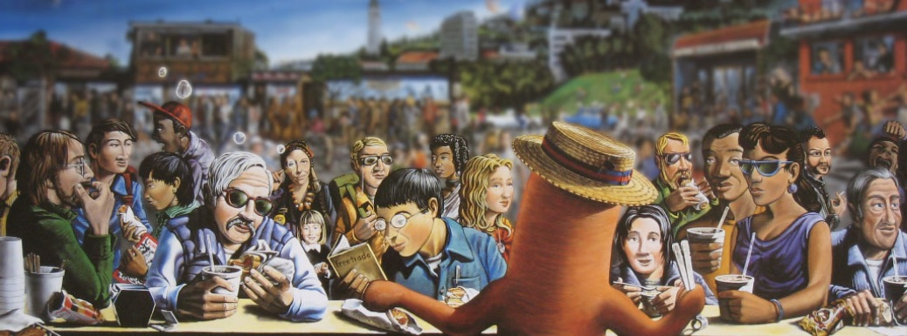

About Us
Then lotsa late nights on the town in San Francisco in the sixties.. but where to find a real natural casing hot dog? Forget it. Doggie Diner was convenient, but ... top dog time! Sampling around for the best frankfurter to sell (and eat!) led to other fine sausages and the idea was born to offer them as hot dogs as well. When no right site could be found in S.F. or Sausalito, hello, Berkeley. That was 1966 and with the paint hardly dry we opened on —surprise— a home football game day. Fifteen minutes later it was full house madness. Talk about learning to host and cook on the run!
With such fans it's been interesting, often challenging — but fun. As in that boy's world, largely gone by, we continue to seek out the best sausage from the best sausage-makers who, born to a tradition of taste, we believe, tend to serve it better. Calabrese? How ya gonna top S.F.'s award-winning house of Molinari? Buon Gusto! Or that little Portuguese plant in San Leandro that makes but two products, one of which, the linguiça, we are proud to say, stands pork shoulder butt higher than any of its competitors in the Bay Area. Then there's the cooked bratwurst from Saag's — as authentic an old-world European taste as you're likely to find. And from another quality third generation producer, Schwarz of S.F., bockwurst unsurpassed! (The "top dog" says that in over fifty years and four continents, he's never tasted better.)
We remain evermore on the prrrowl for unique sausages for affordable and convenient hot dog enjoyment.